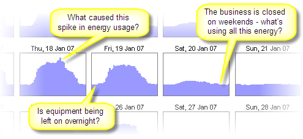
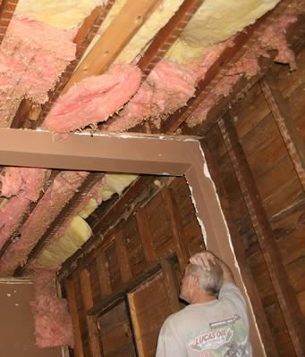

Energy Lens
Energy management made easy
"Energy management" is a term that has a number of meanings, but we're mainly concerned with the one that relates to saving energy in businesses, public-sector/government organizations, and homes:
When it comes to energy saving, energy management is the process of monitoring, controlling, and conserving energy in a building or organization. Typically this involves the following steps:
(And then back to step 2, and the cycle continues...)
To confuse matters, many people use "energy management" to refer specifically to those energy-saving efforts that focus on making better use of existing buildings and equipment. Strictly speaking, this limits things to the behavioural aspects of energy saving (i.e. encouraging people to use less energy by raising energy awareness), although the use of cheap control equipment such as timer switches is often included in the definition as well.
The above four-step process applies either way – it's entirely up to you whether you consider energy-saving measures that involve buying new equipment or upgrading building fabric.
Photo by Valerie Everett
It's not just about saving energy in buildings – the term "energy management" is also used in other fields:
Anyway, from now on we will pay no more attention to these other definitions – all further references to "energy management" will be to the energy-saving sort described above.
Whilst energy management has been popular in larger buildings for a long time, it has only recently started catching on in homes. Most homeowners aren't even aware of the term, and take more of a haphazard, flying-blind approach to reducing their energy consumption...
But the monitoring- and results-driven approach used by professional energy managers is just as effective in the home as it is in larger buildings.
So, if you're a homeowner looking to save energy, don't be put off by the fact that this article focuses more on non-residential buildings. Most of the principles that apply to businesses and other organizations are also applicable to homes. Certainly the four-step process introduced above and detailed below is entirely applicable to home energy management.
Energy management is the key to saving energy in your organization. Much of the importance of energy saving stems from the global need to save energy – this global need affects energy prices, emissions targets, and legislation, all of which lead to several compelling reasons why you should save energy at your organization specifically.
If it wasn't for the global need to save energy, the term "energy management" might never have even been coined... Globally we need to save energy in order to:
Photo by Kevin Dooley
Energy management is the means to controlling and reducing your organization's energy consumption... And controlling and reducing your organization's energy consumption is important because it enables you to:
On top of these reasons, it's quite likely that you have some rather aggressive energy-consumption-reduction targets that you're supposed to be meeting at some worrying point in the near future... Your understanding of effective energy management will hopefully be the secret weapon that will enable you to meet those aggressive targets...
We identified four steps to the energy-management process above. We'll cover each of them in turn:
As a rule of thumb: the more data you can get, and the more detailed it is, the better.
The old school approach to energy-data collection is to manually read meters once a week or once a month. This is quite a chore, and weekly or monthly data isn't nearly as good the data that comes easily and automatically from the modern approach...
The modern approach to energy-data collection is to fit interval-metering systems that automatically measure and record energy consumption at short, regular intervals such as every 15-minutes or half hour. There's more about this on our page about interval data.
Detailed interval energy consumption data makes it possible to see patterns of energy waste that it would be impossible to see otherwise. For example, there's simply no way that weekly or monthly meter readings can show you how much energy you're using at different times of the day, or on different days of the week. And seeing these patterns makes it much easier to find the routine waste in your building.
The detailed meter data that you are collecting will be invaluable for helping you to find and quantify energy-saving opportunities. We've written an article that explains more about how to analyze your meter data to find energy waste.
The easiest and most cost-effective energy-saving opportunities typically require little or no capital investment.
For example, an unbelievable number of buildings have advanced control systems that could, and should, be controlling HVAC well, but, unbeknown to the facilities-management staff, are faulty or misconfigured, and consequently committing such sins as heating or cooling an empty building every night and every weekend.
(NB "HVAC" is just an industry acronym for Heating, Ventilation and Air Conditioning. It's a term that's more widely used in some countries than others.)
And one of the simplest ways to save a significant amount of energy is to encourage staff to switch equipment off at the end of each working day.
Looking at detailed interval energy data is the ideal way to find routine energy waste. You can check whether staff and timers are switching things off without having to patrol the building day and night, and, with a little detective work, you can usually figure out who or what is causing the energy wastage that you will inevitably find.
And, using your detailed interval data, it's usually pretty easy to make reasonable estimates of how much energy is being wasted at different times. For example, if you've identified that a lot of energy is being wasted by equipment left on over the weekends, you can:
Alternatively, if you have no idea of the proportion of energy that is being wasted by equipment left on unnecessarily, you could:
Also, most buildings have open to them a variety of equipment- or building-fabric-related energy-saving opportunities, most of which require a more significant capital investment. You are probably aware of many of these, such as upgrading insulation or replacing lighting equipment, but good places to look for ideas include the Carbon Trust and Energy Star websites.
Although your detailed meter data won't necessarily help you to find these equipment- or building-fabric-related opportunities (e.g. it won't tell you that a more efficient type of lighting equipment exists), it will be useful for helping you to quantify the potential savings that each opportunity could bring. It's much more reliable to base your savings estimates on real metered data than on rules of thumb alone. And it's critically important to quantify the expected savings for any opportunity that you are considering investing a lot of time or money into – it's the only way you can figure out how to hone in on the biggest, easiest energy savings first.
Just finding the opportunities to save energy won't help you to save energy – you have to take action to target them...
For those energy-saving opportunities that require you to motivate the people in your building, our article on energy awareness should be useful. It can be hard work, but, if you can get the people on your side, you can make some seriously big energy savings without investing anything other than time.
As for those energy-saving opportunities that require you to upgrade equipment or insulation: assuming you've identified them, there's little more to be said. Just keep your fingers crossed that you make your anticipated savings, and be thankful that you don't work for the sort of organization that won't invest in anything with a payback period over 6 months.
Photo by Alana Elliott
Once you've taken action to save energy, it's important that you find out how effective your actions have been:
Our article on energy-performance tracking explains how best to analyze your metered energy data to see how well you're making progress at saving energy. Like step 2, this step is one that our Energy Lens software has been specifically designed to help with.
At the very least you should keep analyzing your energy data regularly to check that things aren't getting worse. It's pretty normal for unwatched buildings to become less efficient with time: it's to be expected that equipment will break down or lose efficiency, and that people will forget the good habits you worked hard to encourage in the past...
So at a minimum you should take a quick look at your energy data once a week, or even just once a month, to ensure that nothing has gone horribly wrong... It's a real shame when easy-to-fix faults such as misconfigured timers remain unnoticed for months on end, leaving a huge energy bill that could have easily been avoided.
But ideally your energy-management drive will be an ongoing effort to find new opportunities to target (step 2), to target them (step 3), and to track your progress at making ongoing energy savings (step 4). Managing your energy consumption doesn't have to be a full-time job, but you'll achieve much better results if you make it part of your regular routine.
If you found this article useful, might you consider telling your colleagues or mentioning it on your website?
You might also be interested in our other articles on energy management / energy monitoring and targeting.
And you might like to take a look at our Energy Lens software – it's a big help for finding energy waste (step 2) and tracking progress at making savings (step 4):